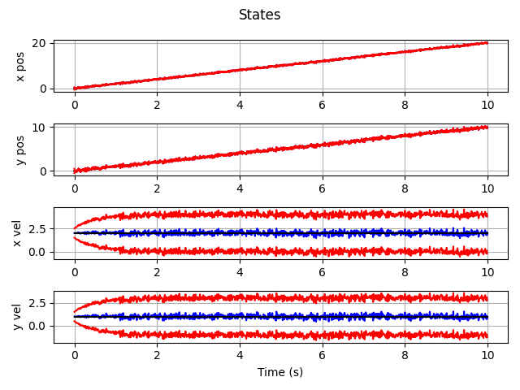
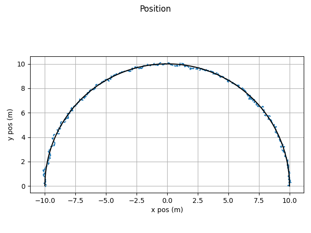
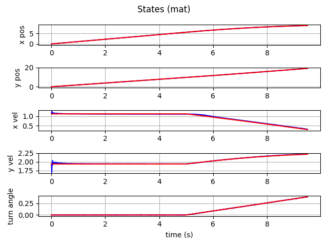

Filter Examples
Kalman Filter
The Kalman filter can be setup using dynamic objects with the following.
1def main():
2 import numpy as np
3 import numpy.random as rnd
4 import matplotlib.pyplot as plt
5
6 import gncpy.plotting as gplot
7 from gncpy.filters import KalmanFilter
8 from gncpy.dynamics.basic import DoubleIntegrator
9
10 # set measurement and process noise values
11 m_noise = 0.02
12 p_noise = 0.2
13 rng = rnd.default_rng(29)
14
15 # define the simulation time
16 dt = 0.01
17 t0, t1 = 0, 10
18 time = np.arange(t0, t1, dt)
19
20 # setup the filter
21 filt = KalmanFilter()
22 filt.cov = 0.25 * np.eye(4)
23
24 filt.set_state_model(dyn_obj=DoubleIntegrator())
25 filt.proc_noise = p_noise ** 2 * np.eye(4)
26
27 m_mat = np.array([[1, 0, 0, 0], [0, 1, 0, 0]])
28 filt.set_measurement_model(meas_mat=m_mat)
29 filt.meas_noise = m_noise ** 2 * np.eye(2)
30
31 # setup variables to save states and truth data
32 states = np.nan * np.ones((time.size, 4))
33 stds = np.nan * np.ones(states.shape)
34 states[0, :] = np.array([0, 0, 2, 1])
35 stds[0, :] = np.sqrt(np.diag(filt.cov))
36
37 t_states = states.copy()
38
39 # Run filter
40 A = DoubleIntegrator().get_state_mat(0, dt)
41 for kk, t in enumerate(time[:-1]):
42 states[kk + 1, :] = filt.predict(
43 t, states[kk, :].reshape((4, 1)), state_mat_args=(dt,)
44 ).flatten()
45 t_states[kk + 1, :] = (A @ t_states[kk, :].reshape((4, 1))).flatten()
46
47 n_state = m_mat @ (
48 t_states[kk + 1, :]
49 + np.sqrt(np.diag(filt.proc_noise)) * rng.standard_normal(1)
50 ).reshape((4, 1))
51 meas = n_state + m_noise * rng.standard_normal(n_state.size).reshape(
52 n_state.shape
53 )
54
55 states[kk + 1, :] = filt.correct(t, meas, states[kk + 1, :].reshape((4, 1)))[
56 0
57 ].flatten()
58 stds[kk + 1, :] = np.sqrt(np.diag(filt.cov))
59
60 # plot states
61 fig = plt.figure()
62 for ii, s in enumerate(DoubleIntegrator().state_names):
63 fig.add_subplot(4, 1, ii + 1)
64 fig.axes[ii].plot(time, states[:, ii], color="b", label="est")
65 fig.axes[ii].plot(time, t_states[:, ii], color="k", label="true")
66 fig.axes[ii].plot(time, states[:, ii] + stds[:, ii], color="r")
67 fig.axes[ii].plot(time, states[:, ii] - stds[:, ii], color="r")
68 fig.axes[ii].grid(True)
69 fig.axes[ii].set_ylabel(s)
70
71 plt_opts = gplot.init_plotting_opts()
72 gplot.set_title_label(fig, -1, plt_opts, ttl="States", x_lbl="Time (s)")
73 fig.tight_layout()
74
75 return fig
which gives this as output.
Extended Kalman Filter
The Extended Kalman filter can be setup using dynamic objects with the following.
1def main():
2 import numpy as np
3 import numpy.random as rnd
4 import matplotlib.pyplot as plt
5
6 import gncpy.plotting as gplot
7 from gncpy.filters import ExtendedKalmanFilter
8 from gncpy.dynamics.basic import CoordinatedTurnUnknown, CoordinatedTurnKnown
9
10 d2r = np.pi / 180
11 r2d = 1 / d2r
12
13 # set measurement and process noise values
14 rng = rnd.default_rng(29)
15
16 p_posx_std = 0.2
17 p_posy_std = 0.2
18 p_velx_std = 0.3
19 p_vely_std = 0.3
20 p_turn_std = 0.2 * d2r
21
22 m_posx_std = 0.1
23 m_posy_std = 0.1
24
25 # create time vector
26 dt = 0.01
27 t0, t1 = 0, 10
28 time = np.arange(t0, t1, dt)
29
30 # create true dynamics object
31 trueDyn = CoordinatedTurnKnown(turn_rate=18 * d2r)
32
33 # create filter
34 coordTurn = CoordinatedTurnUnknown(dt=dt, turn_rate_cor_time=300)
35
36 filt = ExtendedKalmanFilter(cont_cov=True)
37 filt.cov = 0.5 ** 2 * np.eye(5)
38 filt.cov[4, 4] = (0.3 * d2r) ** 2
39
40 filt.set_state_model(dyn_obj=coordTurn)
41 filt.proc_noise = (
42 np.diag([p_posx_std, p_posy_std, p_velx_std, p_vely_std, p_turn_std]) ** 2
43 )
44
45 m_mat = np.array([[1, 0, 0, 0, 0], [0, 1, 0, 0, 0]])
46 filt.set_measurement_model(meas_mat=m_mat)
47 filt.meas_noise = np.diag([m_posx_std, m_posy_std]) ** 2
48
49 # set variables to save states
50 states = np.nan * np.ones((time.size, 5))
51 stds = np.nan * np.ones(states.shape)
52 stds[0, :] = np.sqrt(np.diag(filt.cov))
53 # set radius to be 10 m using v = omega r
54 states[0, :] = np.array([10, 0, 0, 10 * trueDyn.turn_rate, trueDyn.turn_rate])
55 t_states = states.copy()
56
57 Q = np.array([p_posx_std, p_posy_std, p_velx_std, p_vely_std, p_turn_std])
58 for kk, t in enumerate(time[:-1]):
59 # prediction
60 states[kk + 1, :] = filt.predict(t, states[kk, :].reshape((5, 1))).flatten()
61
62 # propagate truth and get measurement
63 t_states[kk + 1, :] = trueDyn.propagate_state(
64 t, t_states[kk, :].reshape((5, 1)), state_args=(dt,)
65 ).flatten()
66 meas = m_mat @ (t_states[kk + 1, :] + (Q * rng.standard_normal(5)))
67 meas += (
68 np.sqrt(np.diag(filt.meas_noise)) * rng.standard_normal(meas.size)
69 ).reshape(meas.shape)
70
71 # correction
72 states[kk + 1, :] = filt.correct(
73 t, meas.reshape((-1, 1)), states[kk + 1, :].reshape((5, 1))
74 )[0].ravel()
75 stds[kk + 1, :] = np.sqrt(np.diag(filt.cov))
76
77 # plot states
78 plt_opts = gplot.init_plotting_opts()
79 fig = plt.figure()
80 fig.add_subplot(1, 1, 1)
81 fig.axes[0].set_aspect("equal", adjustable="box")
82 fig.axes[0].plot(states[:, 0], states[:, 1], linestyle='--')
83 fig.axes[0].plot(
84 t_states[:, 0], t_states[:, 1], color="k", zorder=1000
85 )
86 fig.axes[0].grid(True)
87 gplot.set_title_label(
88 fig, 0, plt_opts, x_lbl="x pos (m)", y_lbl="y pos (m)", ttl="Position"
89 )
90 fig.tight_layout()
91
92 return fig
which gives this as output.
Interacting Multiple Model Filter
The Interacting Multiple Model filter can be setup using dynamic objects with the following.
1def main():
2 import numpy as np
3 import numpy.random as rnd
4 import matplotlib.pyplot as plt
5
6 import gncpy.plotting as gplot
7 from gncpy.filters import KalmanFilter
8 from gncpy.filters import InteractingMultipleModel
9 from gncpy.dynamics.basic import CoordinatedTurnKnown
10
11 # set measurement and process noise values
12 m_noise = 0.002
13 p_noise = 0.004
14
15 dt = 0.01
16 t0, t1 = 0, 9.5 + dt
17 rng = rnd.default_rng(69)
18
19 dyn_obj1 = CoordinatedTurnKnown(turn_rate=0)
20 dyn_obj2 = CoordinatedTurnKnown(turn_rate=5 * np.pi / 180)
21
22 in_filt1 = KalmanFilter()
23 in_filt1.set_state_model(dyn_obj=dyn_obj1)
24 m_mat = np.array([[1, 0, 0, 0, 0], [0, 1, 0, 0, 0], [0, 0, 0, 0, 1]])
25 in_filt1.set_measurement_model(meas_mat=m_mat)
26 in_filt1.cov = np.diag([0.25, 0.25, 3.0, 3.0, 0.25])
27 gamma = np.array([0, 0, 1, 1, 0]).reshape((5, 1))
28 # in_filt1.proc_noise = gamma @ np.array([[p_noise ** 2]]) @ gamma.T
29 in_filt1.proc_noise = np.eye(5) * np.array([[p_noise ** 2]])
30 in_filt1.meas_noise = m_noise ** 2 * np.eye(m_mat.shape[0])
31
32 in_filt2 = KalmanFilter()
33 in_filt2.set_state_model(dyn_obj=dyn_obj2)
34 in_filt2.set_measurement_model(meas_mat=m_mat)
35 in_filt2.cov = np.diag([0.25, 0.25, 3.0, 3.0, 0.25])
36 in_filt2.proc_noise = np.eye(5) * np.array([[p_noise ** 2]])
37 # in_filt2.proc_noise = gamma @ np.array([[p_noise ** 2]]) @ gamma.T
38 in_filt2.meas_noise = m_noise ** 2 * np.eye(m_mat.shape[0])
39
40 # vx0 = 2
41 # vy0 = 1
42 v = np.sqrt(2 ** 2 + 1 ** 2)
43 angle = 60 * np.pi / 180
44 vx0 = v * np.cos(angle)
45 vy0 = v * np.sin(angle)
46
47 filt_list = [in_filt1, in_filt2]
48
49 model_trans = np.array([[1 - 1 / 200, 1 / 200], [1 / 200, 1 - 1 / 200]])
50
51 init_means = np.array([[0, 0, vx0, vy0, 0], [0, 0, vx0, vy0, 0]]).T
52 init_covs = np.array([in_filt1.cov, in_filt2.cov])
53
54 filt = InteractingMultipleModel()
55 filt.set_models(
56 filt_list, model_trans, init_means, init_covs, init_weights=[0.5, 0.5]
57 )
58
59 time = np.arange(t0, t1, dt)
60 states = np.nan * np.ones((time.size, 5))
61 stds = np.nan * np.ones(states.shape)
62 pre_stds = stds.copy()
63 states[0, :] = np.array([0, 0, vx0, vy0, 0])
64 stds[0, :] = np.sqrt(np.diag(filt.cov))
65 pre_stds[0, :] = stds[0, :]
66
67 t_states = states.copy()
68
69 for kk, t in enumerate(time[:-1]):
70 states[kk + 1, :] = filt.predict(t, state_mat_args=(dt,)).flatten()
71 if t < 5:
72 t_states[kk + 1, :] = dyn_obj1.propagate_state(
73 t, t_states[kk, :].reshape((5, 1)), state_args=(dt,)
74 ).flatten()
75 else:
76 t_states[kk + 1, :] = dyn_obj2.propagate_state(
77 t, t_states[kk, :].reshape((5, 1)), state_args=(dt,)
78 ).flatten()
79 pre_stds[kk + 1, :] = np.sqrt(np.diag(filt.cov))
80
81 n_state = m_mat @ (
82 t_states[kk + 1, :].reshape((5, 1))
83 + gamma * p_noise * rng.standard_normal(1)
84 )
85
86 meas = (
87 n_state + m_noise * rng.standard_normal(n_state.size).reshape(n_state.shape)
88 ).reshape((-1, 1))
89
90 states[kk + 1, :] = filt.correct(t, meas)[0].flatten()
91 stds[kk + 1, :] = np.sqrt(np.diag(filt.cov))
92 errs = states - t_states
93
94# plot states
95 fig = plt.figure()
96 for ii, s in enumerate(CoordinatedTurnKnown().state_names):
97 fig.add_subplot(5, 1, ii + 1)
98 fig.axes[ii].plot(time, states[:, ii], color="b")
99 fig.axes[ii].plot(time, t_states[:, ii], color="r")
100 fig.axes[ii].grid(True)
101 fig.axes[ii].set_ylabel(s)
102 fig.axes[-1].set_xlabel("time (s)")
103 fig.suptitle("States (mat)")
104 fig.tight_layout()
105
106 # # plot stds
107 # fig2 = plt.figure()
108 # for ii, s in enumerate(CoordinatedTurnKnown().state_names):
109 # fig2.add_subplot(5, 1, ii + 1)
110 # fig2.axes[ii].plot(time, stds[:, ii], color="b")
111 # fig2.axes[ii].plot(time, np.abs(errs[:, ii]), color="r")
112 # # fig.axes[ii].plot(time, pre_stds[:, ii], color="g")
113 # fig2.axes[ii].grid(True)
114 # fig2.axes[ii].set_ylabel(s + " std")
115 # fig2.axes[-1].set_xlabel("time (s)")
116 # fig2.suptitle("Filter standard deviations (mat)")
117 # fig2.tight_layout()
118 return fig
which gives this as output.
